← Installation · Inhalt · Loslegen →
Die ersten Schritte
Diese Schritte sind auf Smartphone und Desktop gleich, außer wo ein Schritt etwas anderes sagt. Die Liste Erste Schritte oben im Posteingang folgt denselben Schritten und hakt jeden ab. Mit × schließen Sie sie.
Auf einem Smartphone ist der Bildschirm zu schmal für mehr als eine Sache auf einmal:
- Das Regal ist die Liste von allem, was Sie verfolgen, dazu Posteingang, Gespeichert, Suchen und Konfiguration. Auf einem Smartphone ist es ausgeblendet. Tippen Sie oben links auf ☰, um es zu öffnen.
- Ein Artikel öffnet sich über den ganzen Bildschirm. Tippen Sie auf ←, um zur Liste zurückzukehren.
- Konfiguration steht unten im Regal. Tippen Sie darauf, dann auf Grundlegend oder Erweitert, dann auf eine Seite.
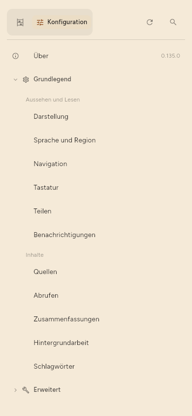
Auf einem Desktop ist das Regal immer links, und ein Artikel öffnet sich neben der Liste.
1. Die erste Quelle hinzufügen
Eine Quelle ist alles, was die App für Sie verfolgt: der Feed einer Nachrichtenseite, ein Videokanal, ein Mastodon-Konto. Ein Feed ist die Liste neuer Artikel, die eine Website für Programme wie dieses veröffentlicht.
Beim ersten Öffnen fragt die App, worauf Sie neugierig sind.
- Tippen Sie auf die Themen, die Sie interessieren, und dann auf Weiter.
- Tippen Sie auf eine vorgeschlagene Quelle, um ihr zu folgen, oder fügen Sie die Adresse einer Website oder eines Kanals in das Feld ein und tippen Sie auf Hinzufügen. Tippen Sie dann auf Weiter.
- Wählen Sie Zusammenfassen, was ich lese, damit die App Zusammenfassungen schreibt, oder lassen Sie es frei. Sie können das später ändern (Schritt 4).
- Tippen Sie auf Lesen beginnen.
Wenn Sie Quellen lieber später hinzufügen, tippen Sie auf dem ersten Bildschirm auf Vorerst überspringen.
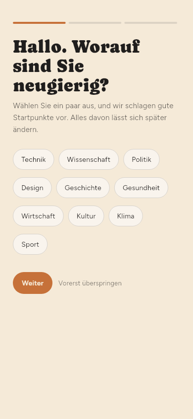
So fügen Sie jederzeit eine Quelle hinzu:
- Öffnen Sie das Regal.
- Tippen Sie auf + neben Ihr Regal. Das Feld Link hinzufügen öffnet sich.
- Fügen Sie die Adresse ein.
- Tippen Sie auf Hinzufügen. Ist die Adresse eine Quelle — ein Feed, ein Kanal oder ein Autor —, zeigt das Feld stattdessen Quelle abonnieren und Seite speichern. Tippen Sie auf das Gewünschte.
- Wenn die Website eine Wahl anbietet, wählen Sie den Feed oder die Seite selbst. Die App markiert eines davon als empfohlen.
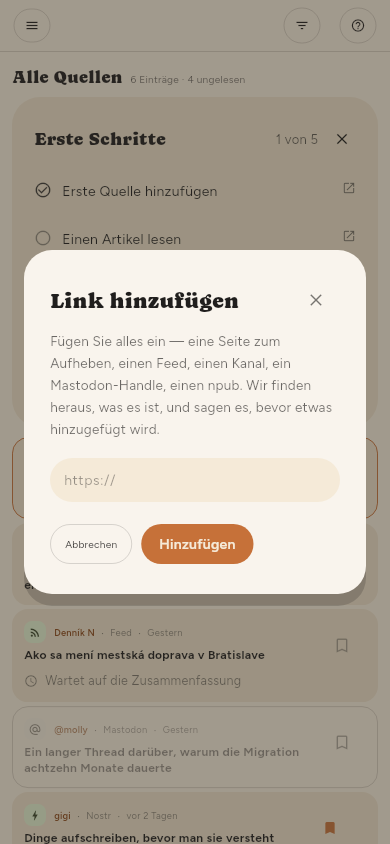
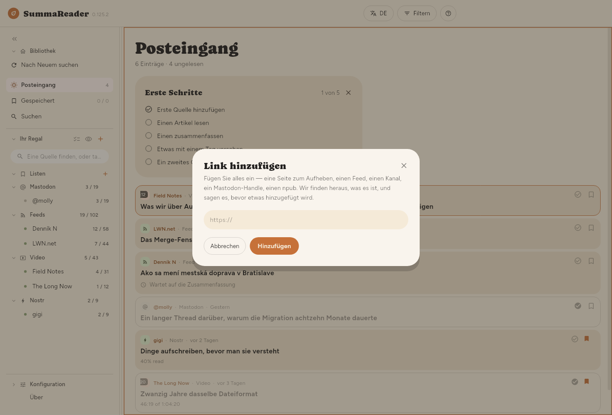
2. Nach neuen Artikeln suchen
Die App prüft Ihre Quellen nach einem Zeitplan. So prüfen Sie sofort:
- Öffnen Sie das Regal.
- Tippen Sie auf Nach Neuem suchen, unter Bibliothek.
Die neuen Artikel landen im Posteingang.
Um eine Prüfung anzuhalten, tippen Sie unten im Statusstreifen auf Anhalten. Die Schaltfläche wechselt zu Wird angehalten…. In jeder Quelle liest die App den aktuellen Artikel noch zu Ende. Wartende Quellen startet sie nicht mehr. Die schon geholten Artikel bleiben. Die nächste Prüfung beginnt mit den Quellen, die nicht fertig wurden.
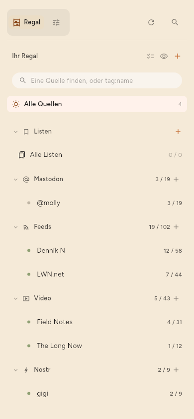
So ändern Sie, wie oft die App prüft: Konfiguration › Grundlegend › Abrufen › Wie oft nach Neuem suchen. Nur auf Anfrage stoppt alle automatischen Prüfungen.
Die erste Prüfung holt die Artikel, die die Quelle gerade anbietet. Sie sind für Sie nicht neu, deshalb fasst die App sie nicht automatisch zusammen. Sie fasst nur Artikel zusammen, die nach dem Hinzufügen der Quelle eintreffen.
3. Einen Artikel lesen
- Tippen Sie im Posteingang auf einen Artikel.
- Lesen Sie ihn. Der Artikel hat unten drei Tabs: Zusammenfassung, Quelle (der volle Text) und Details.
- Tippen Sie auf einem Smartphone auf ←, um zur Liste zurückzukehren.
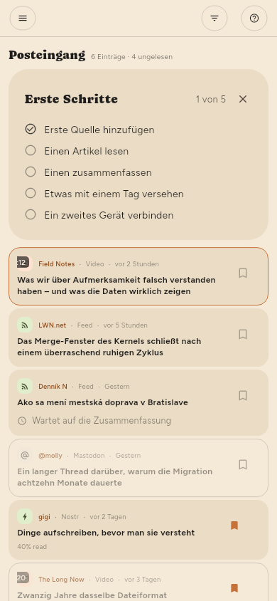
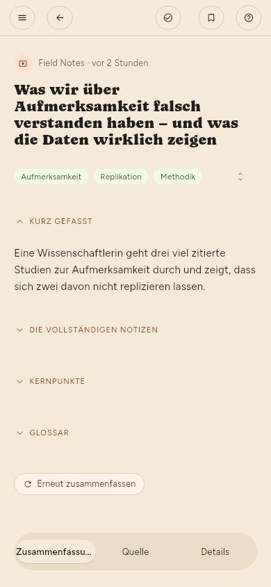
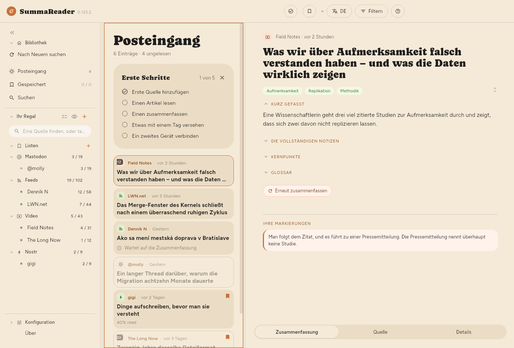
4. Zusammenfassungen einschalten und wählen, wo sie laufen
Eine Zusammenfassung schreibt ein Modell: ein Programm, das den Artikel liest und eine kurze Fassung davon schreibt. Das Modell läuft an einem von zwei Orten.
- Dieses Gerät — das Modell läuft auf Ihrem Smartphone oder Computer. Nichts verlässt das Gerät. Sie laden das Modell einmal herunter. Zusammenfassungen auf dem Gerät sind langsam: ein paar Minuten für jeden Teil eines Artikels, auf älteren Smartphones und Tablets viel länger.
- Entferntes LLM — der Artikel geht an einen Server, auf dem das Modell läuft: einen, den Sie selbst betreiben, oder einen kostenpflichtigen Dienst. Ein Server ist viel schneller. Nur in diesem Fall verlässt der Text eines Artikels Ihr Gerät.
So richten Sie es ein:
- Öffnen Sie Konfiguration › Grundlegend › Zusammenfassungen › Zusammenfassen › Zusammenfassung und prüfen Sie, dass sie eingeschaltet ist.
- Wählen Sie unter Konfiguration › Grundlegend › Zusammenfassungen › Wo Zusammenfassungen laufen Dieses Gerät oder Entferntes LLM. Wenn Sie zum ersten Mal Dieses Gerät wählen, sagt Ihnen die App, dass Zusammenfassungen hier langsam sind. Die Zusammenfassungen laufen im Hintergrund weiter, während Sie lesen.
- Für Dieses Gerät: Öffnen Sie Konfiguration › Erweitert › Modell auf dem Gerät › Ein Modell finden, suchen Sie und laden Sie ein Modell herunter. Tippen Sie dann unter Konfiguration › Erweitert › Modell auf dem Gerät › Modelle auf diesem Gerät daneben auf Starten.
- Für Entferntes LLM: Öffnen Sie Konfiguration › Erweitert › LLM-Server › LLM-Server. Füllen Sie Adresse, Modell und, falls der Server einen braucht, den API-Schlüssel aus. Tippen Sie auf Prüfen.
- Öffnen Sie einen Artikel und tippen Sie auf Zusammenfassen.
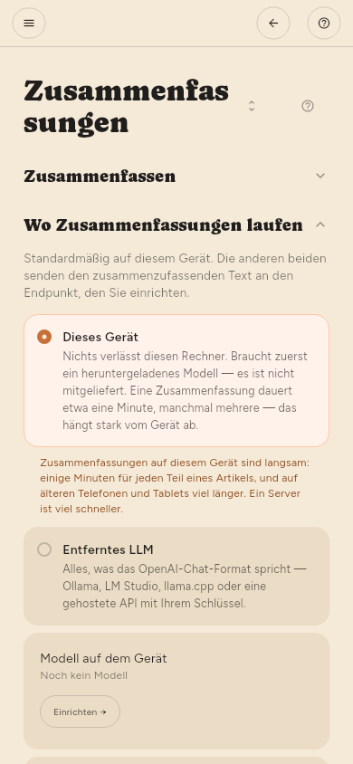
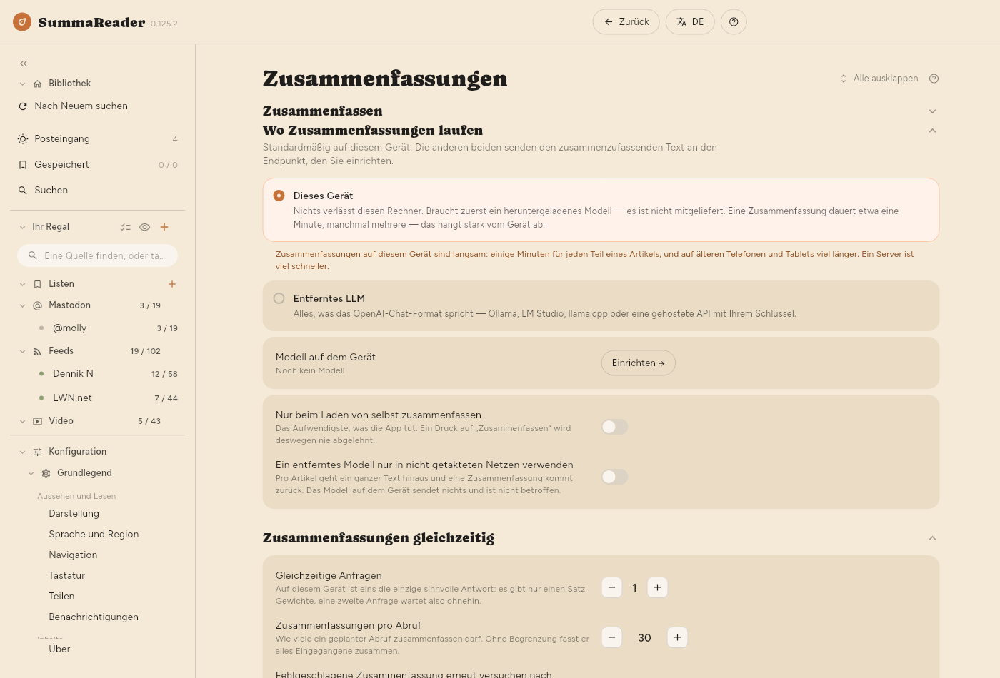
In Premium kann die App neue Artikel auch automatisch zusammenfassen, nach jeder Prüfung. Schalten Sie in den Einstellungen einer Quelle Zusammenfassen ein (siehe Quellen verwalten).
5. Etwas mit einem Schlagwort versehen und auf einer Liste aufbewahren (nur Premium)
Schlagwörter und Listen gibt es in Premium.
Ein Schlagwort ist ein Wort, das Sie an einen Artikel oder eine Quelle hängen, zum Beispiel linux. Die Zusammenfassung schlägt Schlagwörter vor.
- Öffnen Sie einen Artikel.
- Tippen Sie unter dem Titel auf ein vorgeschlagenes Schlagwort, um es zu übernehmen, oder tippen Sie auf den Stift (Schlagwörter bearbeiten), um eigene einzugeben.
Eine Liste hält Artikel zusammen. Gespeichert ist die erste Liste.
- Öffnen Sie einen Artikel.
- Tippen Sie oben auf das Lesezeichen, um ihn auf der aktuellen Liste zu speichern.
- Für eine andere Liste halten Sie das Lesezeichen gedrückt und wählen dann eine Liste oder legen eine neue an.
6. Ein zweites Gerät koppeln
Sync hält Ihre Geräte auf demselben Stand: was Sie lesen, was Sie speichern und die Artikel selbst. Dafür braucht es einen Sync-Server, den Sie selbst betreiben. Der Server speichert nur verschlüsselte Daten und kann Ihre Bibliothek nicht lesen.
Laden Sie den Server von seiner Release-Seite herunter; Den Server besorgen sagt, welche Datei Sie nehmen.
Auf dem ersten Gerät:
- Öffnen Sie Konfiguration › Erweitert › Sync › Sync.
- Schalten Sie Meine Geräte im Gleichschritt halten ein.
- Füllen Sie Serveradresse und Geräte-Token aus. Beides bekommen Sie vom Server.
- Tippen Sie unter Konfiguration › Erweitert › Sync › Weiteres Gerät auf Code erzeugen. Die App zeigt einen QR-Code und denselben Code als Text.
Auf dem zweiten Gerät:
- Installieren Sie die App und öffnen Sie Konfiguration › Erweitert › Sync › Sync.
- Schalten Sie Meine Geräte im Gleichschritt halten ein.
- Tippen Sie unter Oder mit einem Code beitreten auf Scannen und richten Sie die Kamera auf den QR-Code. Auf einem Gerät ohne Kamera fügen Sie den Textcode in das Feld ein. Unter Linux kann eine Webcam den Code scannen.
- Tippen Sie auf Code verwenden.
Der Code enthält den Schlüssel zu Ihrer Bibliothek. Zeigen Sie ihn nur Ihrem eigenen Gerät und schließen Sie ihn, wenn Sie fertig sind.

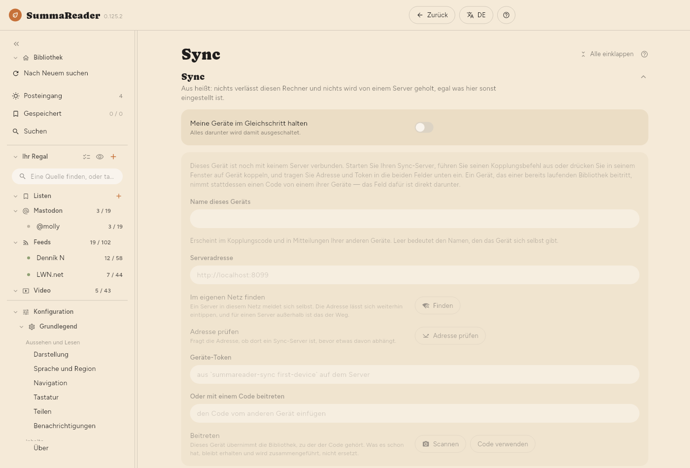
7. Den Wiederherstellungscode erzeugen
Der Wiederherstellungscode ist der einzige Weg zurück in Ihre Bibliothek, wenn Sie alle gekoppelten Geräte verlieren. Niemand kann ihn für Sie neu erzeugen.
- Öffnen Sie Konfiguration › Erweitert › Sync › Wiederherstellungsschlüssel › Wiederherstellungscode.
- Tippen Sie auf Erzeugen.
- Schreiben Sie den Code auf. Bewahren Sie ihn an einem Ort auf, an den Sie auch dann noch kommen, wenn dieses Gerät weg ist. Die App zeigt ihn einmal und behält keine Kopie.